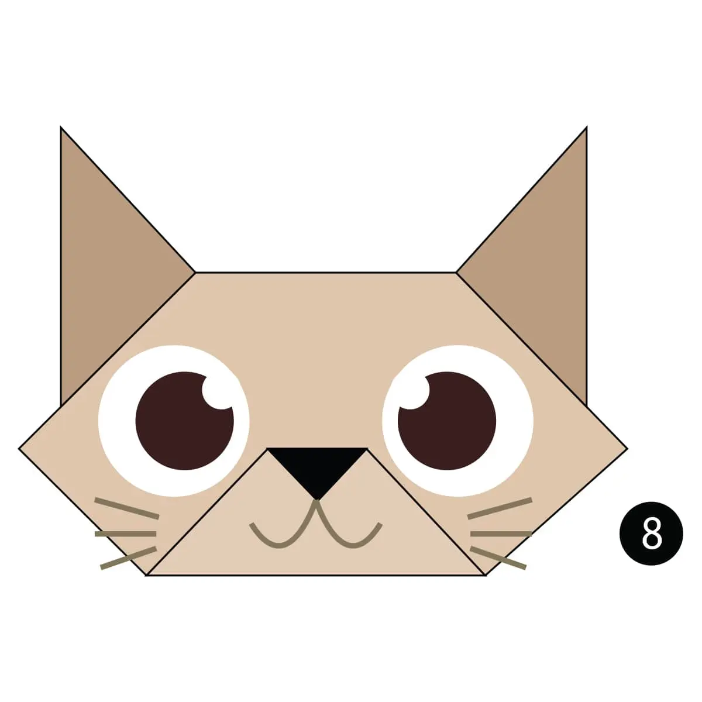
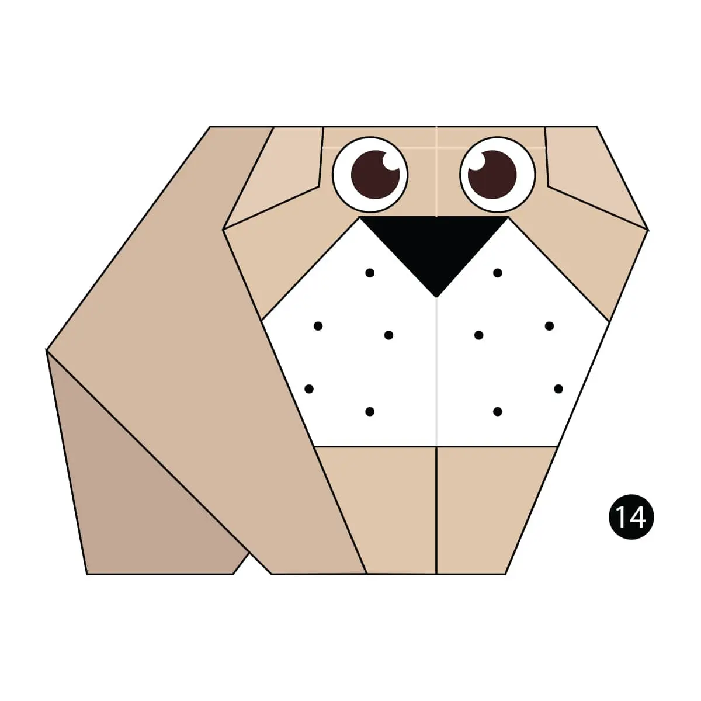
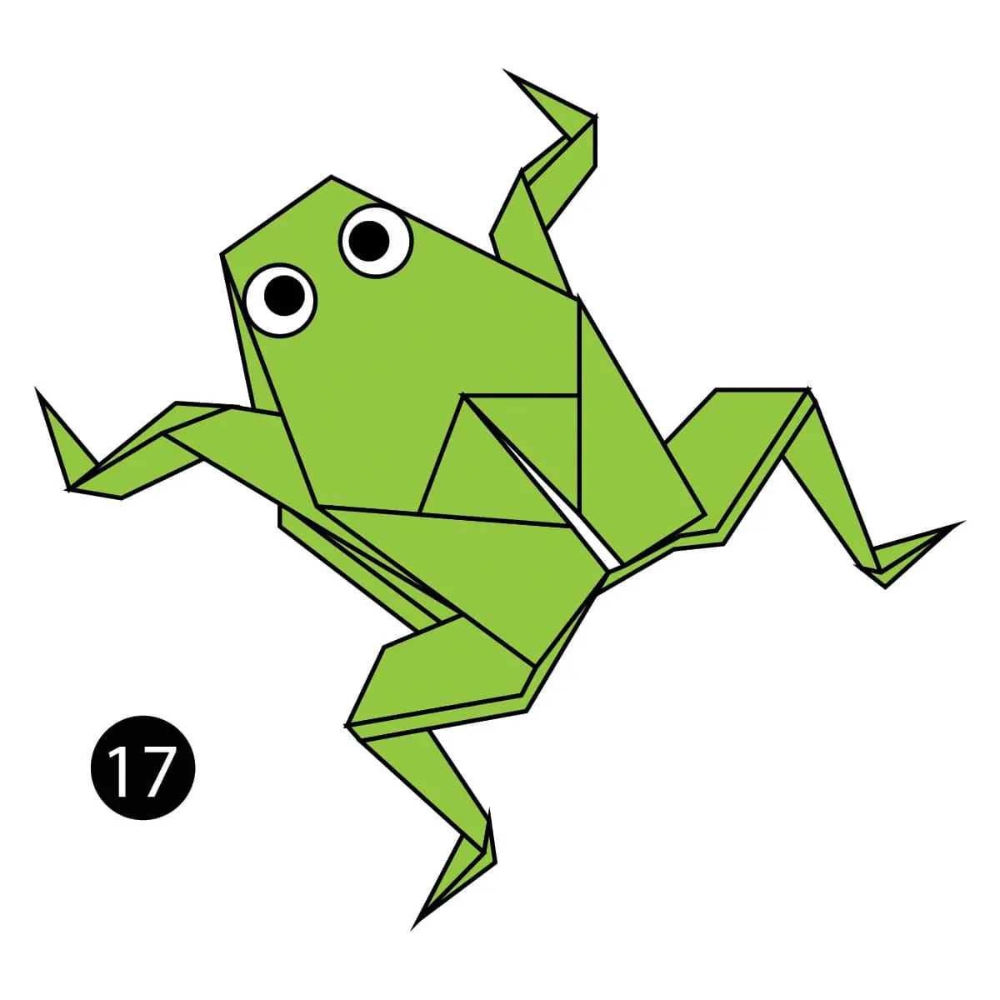

chameleon
- Chameleon are reptiles that are part of the iguana suborder
- Chameleon skin color is an important part of communication among Chameleon
- Most chameleon have a prehensile tail that they use to wrap around tree branches

Pigeon
- Pigeons are incredibly complex and intelligent animal
- Pigeons are renowed for their outstanding navigational abilities
- Pigeons have excellent hearing abilities

Camel
- camels ears are furry
- camel can move easily across the sand becouse of its special designed feet
- when the find water , the will drink as much as possible

Panda
- A giant panda is much bigger than your teddy bear.
- Pandas go from pink to white and black (or brown).
- Pandas are "lazy" — eating and sleeping make their day.

Cat
- Cats conserve energy by sleeping for an average of 13 to14 hours a day.
- Cats have flexible bodies and teeth adapted for hunting small animals such as mice and rats.
- A group of cats is called a clowder

Bulldog
- THEY WERE BRED TO FIGHT BULLS
- THEIR UNUSUAL LOOK HAD A GRUESOME PURPOSE.
- THEY NARROWLY ESCAPED EXTINCTION.

Camel
- Cicadas can survive a huge fall as babies, or nymphs.
- Most have red-orange eyes.
- The loud whirring or buzzing sound you hear is an all-male cicada chorus.

frog
- Frogs absorb water through their skin so they don't need to drink.
- Frogs can lay as many as 4,000 eggs in frogspawn
- Frogs have long back legs and webbed feet for jumping and swimming.

Teddy
- he term bear-hug was first recorded in 1846.
- The Teddy Bears' Picnic song was originally called The Teddy Bear Two Step.
- The Oxford English Dictionary dates the first use of the term teddy bear to 1906